化学模型制作
首先部署环境

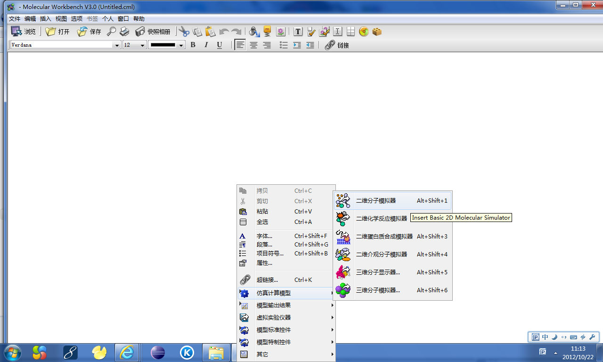
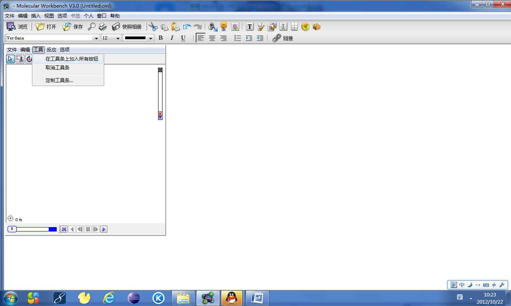
开始编辑模型
第一步：
点击 文件 新建 命名 确定
第二步：
点击 右键 仿真计算模型 二维分子模拟器 工具 选择（在工具条上显示所有按钮）
第三步：
选择加入障碍物 选择障碍物点击右键 属性 将X轴改为0；
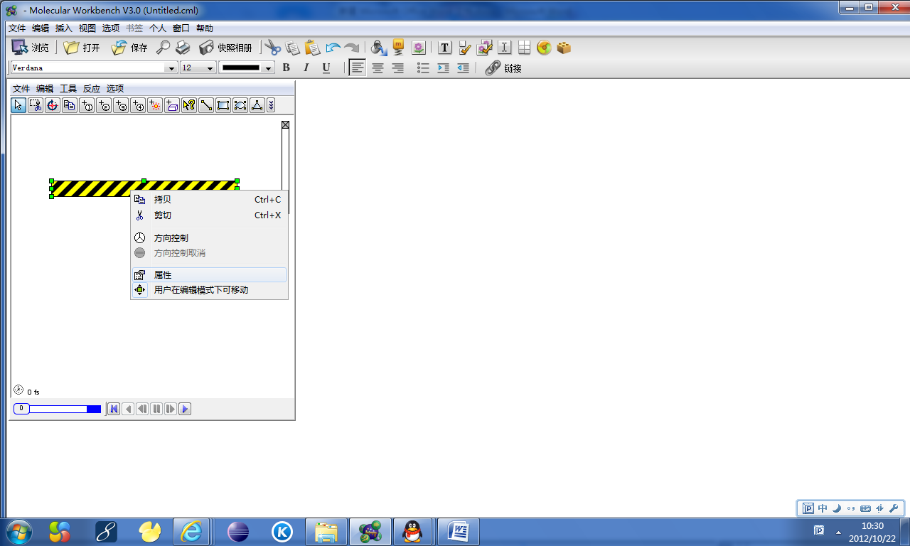
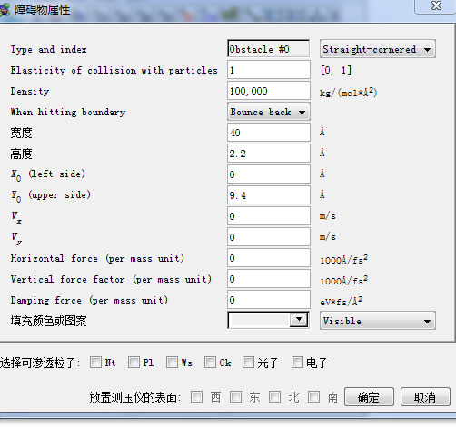
第四步：
选择 -------直线------点击右键-----属性----选择线性和粗细
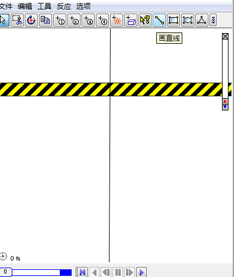
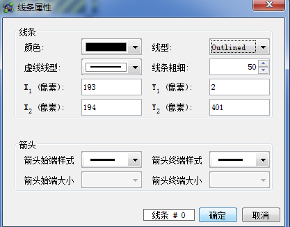
编辑完的效果如下：
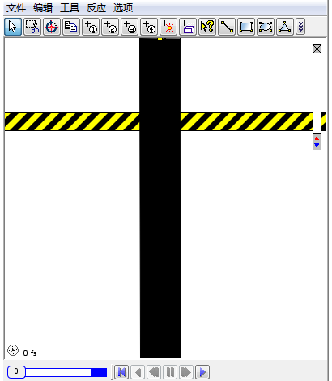
第五步：
选择线条----右键-----选择绑定目标-----选择----确认
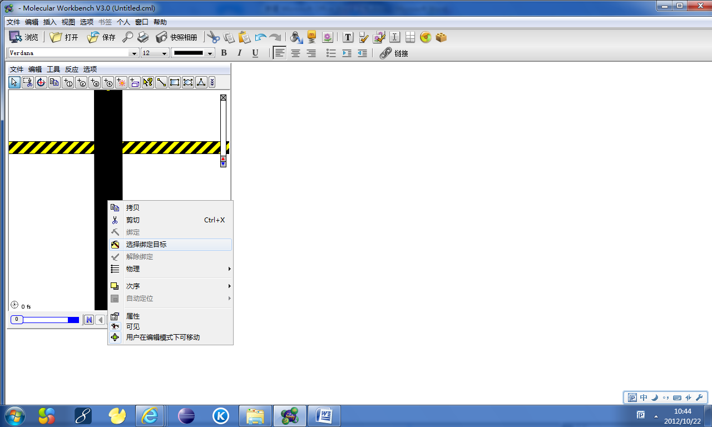
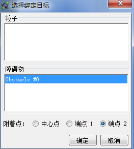
第六步：
选择线条----点击次序----放在粒子层后
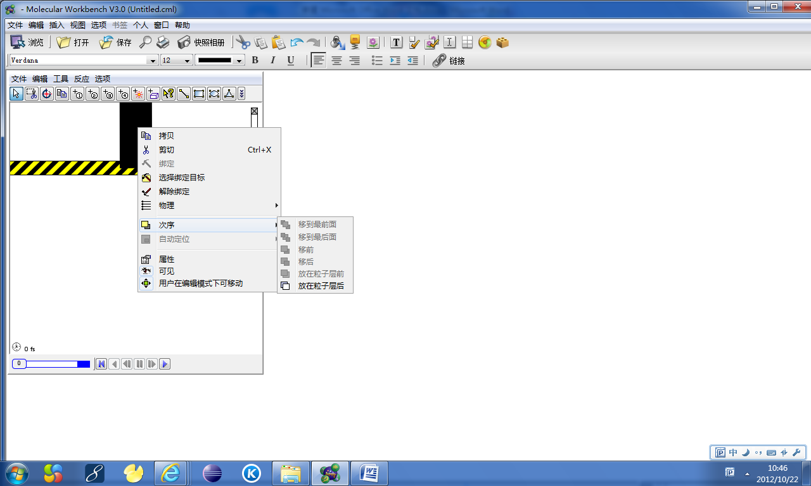
第七步：
加入PL粒子----
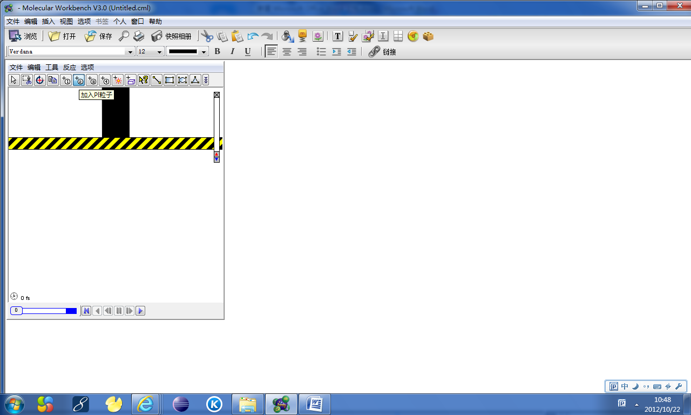
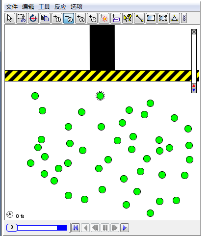
第八步：
点击文件----保存---命名
第九步：
点击右键---模型标准控件----按钮控件----填写属性和运行控件
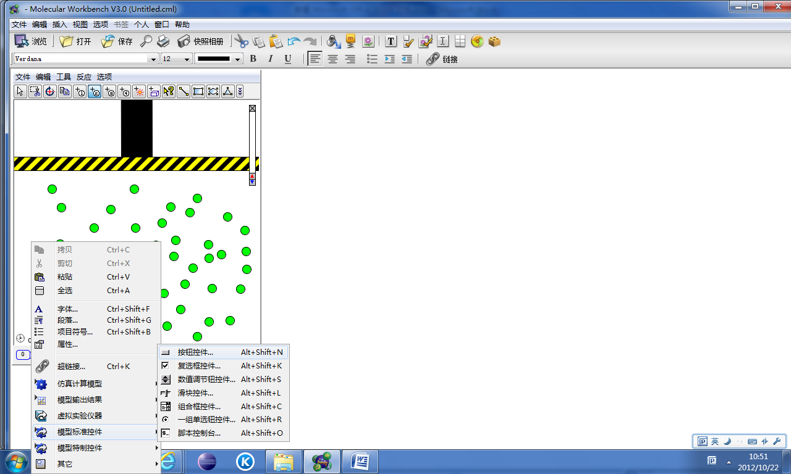
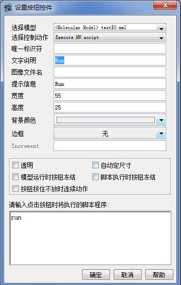
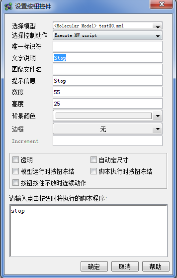
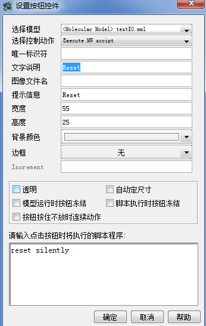
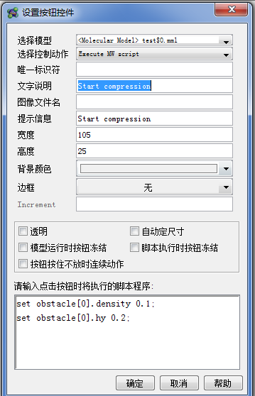
第十步：
点击右键---取消工具条---取消显示条----取消控制条----选择视觉效果—修改。
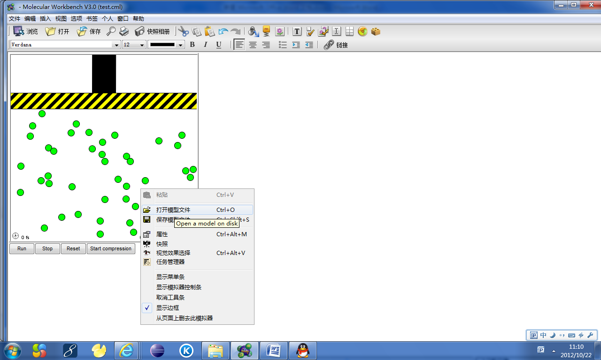
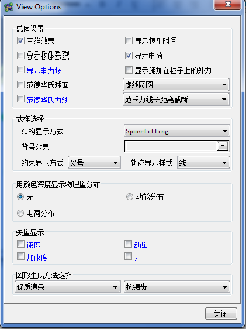
完成:
 保存。
保存。